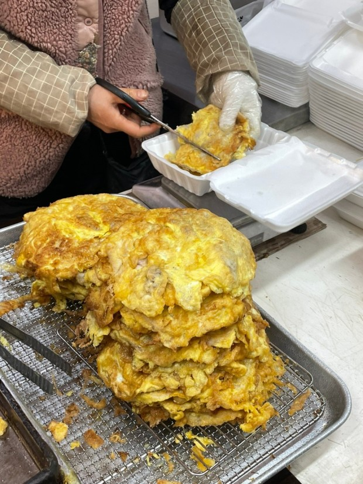
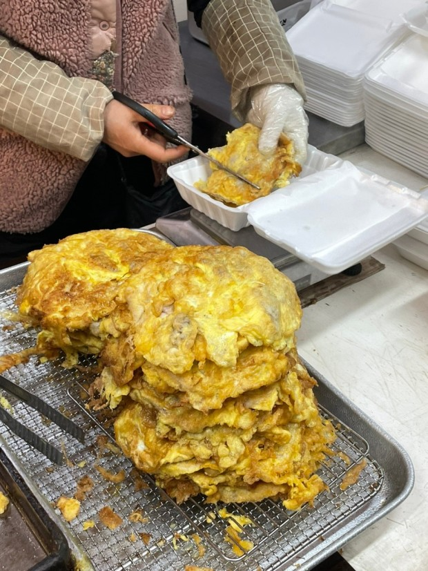

<< 맛집 코스 >>
1. 언양 닭칼국수 - 진하고 깊은 맛의 국물이 특징인 요리입니다. 부드럽게 익은 닭고기와 쫄깃한 칼국수 면이 잘 어우러지며 김치와 함께 먹으면 그 맛이 더 풍부해집니다.
2. 스페이스 워크 - 바다와 하늘을 한눈에 담을 수 있는 계단형 산책로 입니다. 공중에 떠 있는 듯 한 느낌을 주는 독특한 구조로 계단을 올라가며 펼쳐지는 자연경관을 감상할 수 있습니다.
3. 죽도시장 육전 - 시장에서 고유의 맛을 자랑하는 대표적인 고기 요리입니다. 합 입 베어물면 고 기의 풍미와 함께 깊은 맛을 느낄 수 있으며, 식사로도, 간식으로도 만족스러운 선택이 될 것입니다.
4. 죽도소년 카페 - 편안하고 여유로운 분위기 속에서 커피와 디저트를 즐길 수 있습니다. 예쁜 인 테리어와 아늑한 분위기 속에서 맛있는 음료와 부드러운 케이크, 고소한 바나나 구이를 맛볼 수 있습 니다.